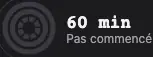
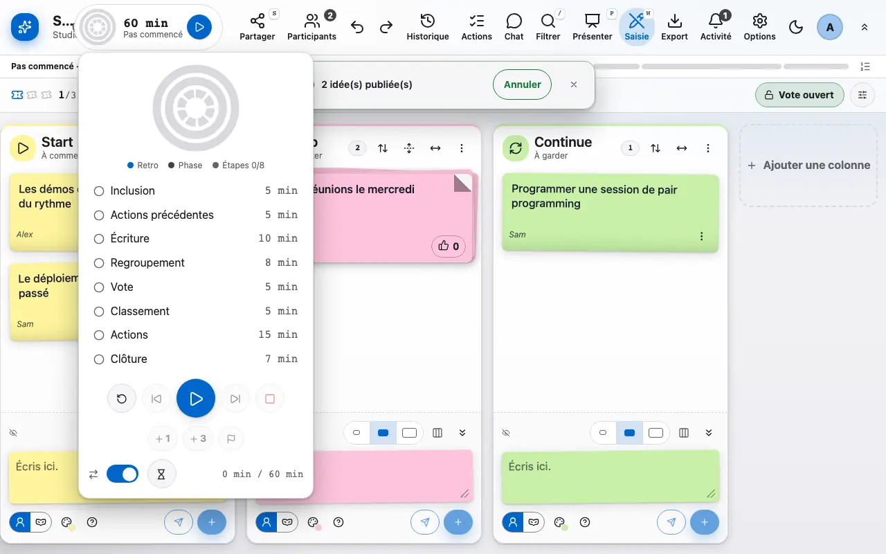
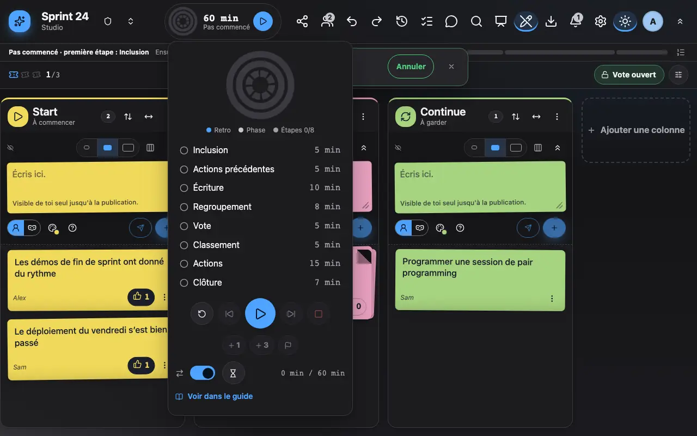

Le déroulé et le minuteur
Le déroulé découpe la rétro en phases chronométrées.
1 L’anneau montre la phase en cours et le temps restant.
L'anneau en haut du board montre la phase en cours et le temps restant. Il se remplit au fil de la phase et passe à une autre couleur quand le temps est dépassé.

2 Le panneau du déroulé permet de démarrer, passer à la phase suivante ou rallonger.
Cliquer sur l'anneau ouvre le panneau du déroulé: démarre la rétro, passe à la phase suivante, rallonge la phase en cours ou reviens en arrière. Les phases (accueil, écriture, regroupement, vote, actions) peuvent être adaptées à ta rétro.

